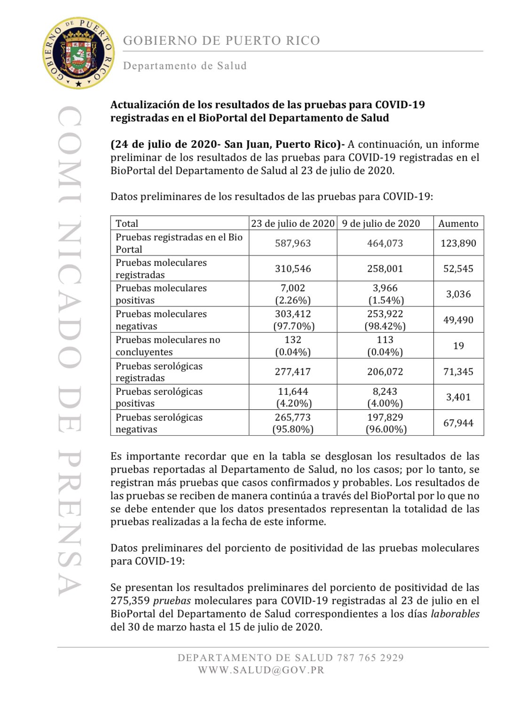
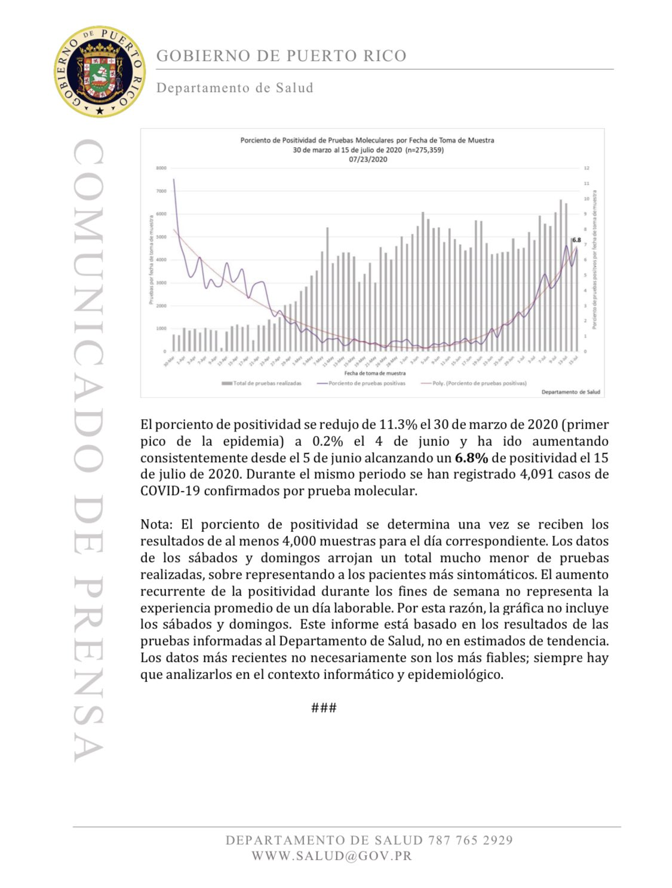
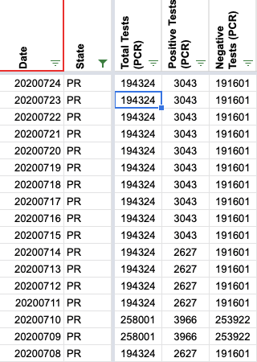
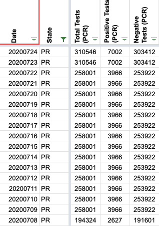
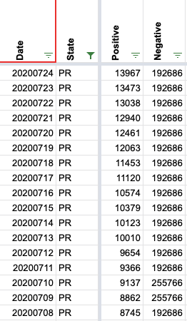

[PR] New Puerto Rico testing count report for July 24
State or US: Puerto Rico
The Puerto Rico Department of Health shared a new Bioportal report with its testing counts as of July 23. As usual, it just shares them with some journalists who share it on Twitter:
- https://twitter.com/angelicaserran0/status/1286690476968599555
- https://twitter.com/RobbyCortes/status/1286697081705566208
As usual as well, I have a CSV with all the data of all these irregular reports:
Images of the report (2 pages):


Comments
OK, so there was a miscommunication after the last update I made and the daily data entry team continued carrying over the previous (6/29) numbers on 7/12 and after. So I not only put in @sacundim’s new numbers for 7/23 and 7/24, I also fixed the data for previous two weeks. This time I will make sure we handle this correctly in tomorrow’s data entry shift.
I did this right after today’s publication, so these numbers aren’t factored into the test numbers in today’s tweets. The website however should pick them up in an hour or so.
PCR columns before: 
PCR columns after: 
Negative column before: 
Negative column after:
One anomaly here is that on 7/15 the data entry team reported a new number for Positive Cases (PCR) that is lower than the data point we had for 7/9. I’m not sure what happened there yet but wanted to get the data fixed first.
As always, thanks so much @sacundim for keeping us informed of these data releases!
Quick update: I don’t see anything in the data entry conversations to indicate where the Positive Cases (PCR) data point on 7/15 came from. Since this data source contradicts it, I’m not too worried about losing it.
Thank you @sacundim and @MattHilliard so much!